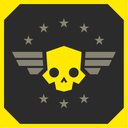
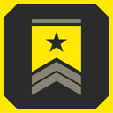
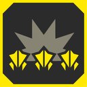
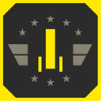
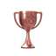
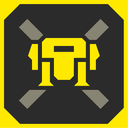
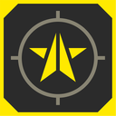
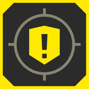
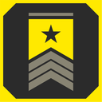
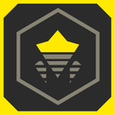

Achievements
绝地潜兵 2 has 38 collectible achievements that can be obtained by performing various tasks, three of which are 隐藏 until they are unlocked.
On PlayStation, the trophies are divided into 3 gold, 10 silver and 22 bronze, alongside the platinum trophy for obtaining every other trophy.
On Xbox, the combined Gamerscore of all the achievements is 1,000.
List of Achievements
Spoilered text (such as this) can be clicked to show advice on obtaining the 成就.
| 图标 | 描述 | Trophy | Gamerscore |
|---|---|---|---|
| 超级地球典范 获得《绝地潜兵™ 2》的全部奖杯。 |
不适用 | ||
 |
绝地俯冲 完成 an |
125 | |
| 帮我拿着主武器，我要冲了！ 完成 a full |
125 | ||
| 致命360秒！ 完成 a full |
125 | ||
| 物资出击！ Kill a 强袭虫 with a 重新补给 pod. |
35 | ||
| 样本是潜兵最好的伙伴 撤离 at least 稀有样本 from a 任务 as a team. |
35 | ||
 |
履行职责 完成至少100项任务。 |
35 | |
| It's the only way to be sure… 在同一地点同时部署6个轨道火力网战略配备。 |
35 | ||
| 顾全大局！ 击杀5000名敌人。 |
35 | ||
| 烧死它！ 在同一项任务中通过灼烧伤害击杀100名敌人。 |
35 | ||
| 受死吧！ 一次性连射至少150发弹药，击杀至少10名敌人。 |
35 | ||
| That which does not kill you… 四肢同时受伤。 |
35 | ||
 |
民主之力 利用一项战略配备击杀25名敌人。 |
35 | |
 |
火力全开 Reach max level on one 舰船模块. |
35 | |
| 赶紧送！ 升级 all 舰船模块 at least 1 level. |
 |
10 | |
 |
自由价更高 Defeat a Hulk. |
10 | |
| The taller they are… Defeat a 吐酸泰坦. |
10 | ||
| “战术咖”并非浪得虚名 完成 10 tactical 目标. |
10 | ||
| 就算平局吧 射掉 both arms on a Hulk and then 撤离 while it's alive. |
10 | ||
| 真男人从不回头看…啊啊啊！ 飞至距离爆炸冲击波至少25米远的位置。 |
10 | ||
| 烫手山芋！ 掷回一颗已激活的榴弹。 |
10 | ||
 |
机器人克星 Play 1 Bot 任务. |
10 | |
| 虫族克星 Play 1 Bug 任务. |
10 | ||
 |
开采乡村 Play a 行星 防御 任务. |
10 | |
 |
爱国者 参与至少50项任务。 |
10 | |
| 尝尝我的解放威力！ While using a 跳跃背包, knock yourself into a ragdoll state. |
10 | ||
| 接招！ |
10 | ||
| 民主大业还需要你的力量 使用治疗剂治疗其他玩家。 |
10 | ||
| 倡导合作 辅助一名队友装填弹药。 |
10 | ||
| 时空悍将 用新披肩、盔甲和头盔对你的绝地潜兵进行自定义。 |
10 | ||
| 说时迟那时快 在倒计时归零后撤离。 |
10 | ||
| 动真格 完成 Basic Training. |
10 | ||
| 法网恢恢 击杀一名100米外的目标。 |
10 | ||
| 科学以量取胜 撤离 with at least 15 常见样本. |
10 | ||
| They mostly come at night… 夜间从任务中撤离。 |
10 | ||
| 散播管理式民主 在同一项任务中击杀150名敌人。 |
10 |
Hidden Achievements
| 图标 | 描述 | Trophy | Gamerscore |
|---|---|---|---|
| 完全撤离！ 撤离 with a full team on a 困难难度 or more 任务. |
35 | ||
| 完成任务！ 完成任务，但撤离失败。 |
10 | ||
 |
跟踪违法 完成 a 追踪虫 Hive tactical 目标. |
10 |